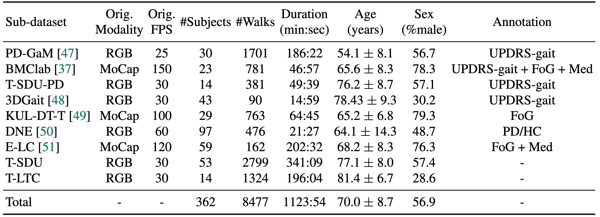
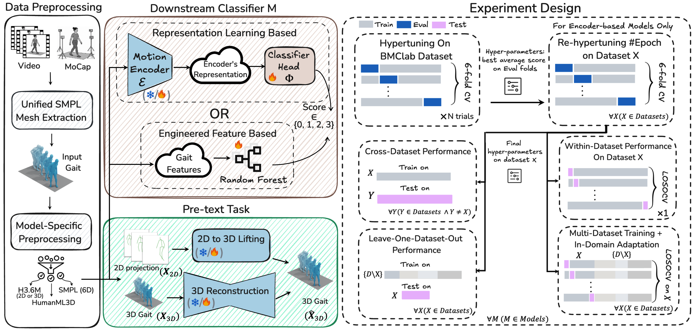
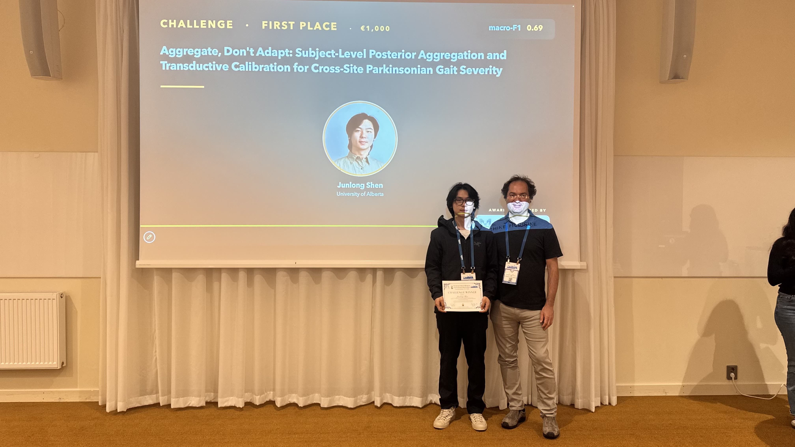
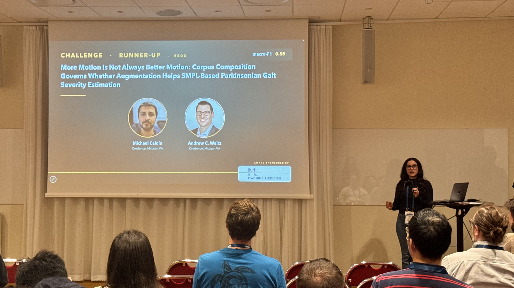

First CARE-PD competition at MoCha
The CARE-PD benchmark and challenge brought gait analysis and clinical score prediction to the MoCha workshop at ECCV 2026. The competition drew 113 participants and 1,669 submissions.
See the competitionCARE-PD connects diverse clinical recordings through a common, anonymized motion representation.
Objective gait assessment in Parkinson’s Disease (PD) is limited by the absence of large, diverse, and clinically annotated motion datasets. We introduce CARE-PD, the largest publicly available archive of 3D mesh gait data for PD, and the first multi-site collection spanning 9 cohorts from 8 clinical centers. All recordings (RGB video or motion capture) are converted into anonymized SMPL meshes via a harmonized preprocessing pipeline.
CARE-PD supports two key benchmarks: supervised clinical score prediction (estimating Unified Parkinson’s Disease Rating Scale, UPDRS, gait scores) and unsupervised motion pretext tasks (2D-to-3D keypoint lifting and full-body 3D reconstruction). Clinical prediction is evaluated under four generalization protocols: within-dataset, cross-dataset, leave-one-dataset-out, and multi-dataset in-domain adaptation.
To assess clinical relevance, we compare state-of-the-art motion encoders with a traditional gait-feature baseline, finding that encoders consistently outperform handcrafted features. Pretraining on CARE-PD reduces MPJPE (from 60.8 mm to 7.5 mm) and boosts PD severity macro-F1 by 17 percentage points, underscoring the value of clinically curated, diverse training data. CARE-PD and all benchmark code are released for non-commercial research.
Nine cohorts, one harmonized foundation for evaluating clinical gait models.

Dataset composition and statistics. The table presents a comprehensive overview of the CARE-PD dataset, showing the distribution of participants, recording sessions, and clinical assessments across the 9 contributing cohorts from 8 international clinical centers. Each cohort's contribution includes detailed demographics, UPDRS scores, and gait recording specifications.
View full-size figure ↗
Overview of CARE-PD preprocessing and experimental design. Left: Unified pipeline for extracting SMPL gait meshes from MoCap and video data, followed by model-specific formatting. Right: Benchmarking setup across two pipelines (representation learning vs. gait features), pretext tasks, and four evaluation protocols.
The CARE-PD benchmark and challenge brought gait analysis and clinical score prediction to the MoCha workshop at ECCV 2026. The competition drew 113 participants and 1,669 submissions.
See the competitionOur MoCha workshop, featuring a challenge on the CARE-PD dataset, will be at ECCV 2026! For details on how to participate and timelines, please visit the MoCha website.
Our multi-site dataset and clinical gait benchmarks were accepted at NeurIPS 2025.
Read the paperAt the MoCha workshop at ECCV 2026, researchers tested how well gait severity models generalize to clinical sites unseen during training. Congratulations to the two winning teams.
MoCha 2026

“Aggregate, Don't Adapt: Subject-Level Posterior Aggregation and Transductive Calibration for Cross-Site Parkinsonian Gait Severity”
Read the winning paper
“More Motion Is Not Always Better Motion: Corpus Composition Governs Whether Augmentation Helps SMPL-Based Parkinsonian Gait Severity Estimation”
Read the runner-up paperWork with us
We invite researchers, clinicians, and institutions to contribute to the growing CARE-PD dataset. By joining our collaborative initiative, you can help advance Parkinson's disease research.
We'll work with you to ensure proper data anonymization, ethical compliance, and seamless integration into the CARE-PD pipeline.
Please cite the CARE-PD paper and the applicable original dataset papers when using corresponding cohorts.
View all original dataset citations@inproceedings{adeli2025carepd,
title={CARE-PD: A Multi-Site Anonymized Clinical Dataset for Parkinson’s Disease Gait Assessment},
author={Vida Adeli, Ivan Klabučar, Javad Rajabi, Benjamin Filtjens, Soroush Mehraban, Diwei Wang, Hyewon Seo, Trung-Hieu Hoang, Minh N. Do, Candice Muller, Claudia Neves de Oliveira, Daniel Boari Coelho, Pieter Ginis, Moran Gilat, Alice Nieuwboer, Joke Spildooren, J. Lucas McKay, Hyeokhyen Kwon, Gari Clifford, Christine D. Esper, Stewart A. Factor, Imari Genias, Amirhossein Dadashzadeh, Leia Shum, Alan Whone, Majid Mirmehdi, Andrea Iaboni, Babak Taati},
booktitle={NeurIPS},
year={2025}
}Each cohort in CARE-PD comes from original research studies. Please cite all relevant original papers to give proper credit to the data contributors.
Please read carefully the terms and conditions and any accompanying documentation before you download and/or use the CARE-PD dataset. This dataset is licensed under the Creative Commons Attribution–NonCommercial 4.0 International License (CC BY-NC 4.0). The license permits sharing and adapting the dataset for non-commercial purposes with appropriate attribution (Read the full license).
By using this dataset, you agree to comply with our terms and conditions. Read full terms